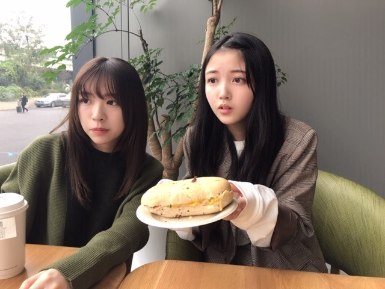
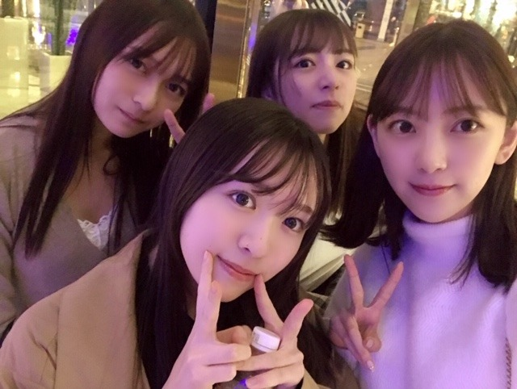
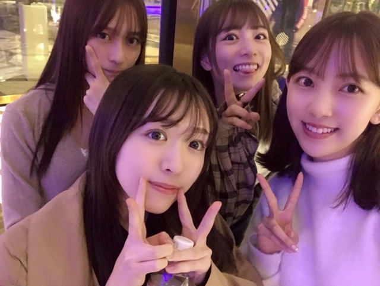

2019/1103Sunドレッシングマジック
2nd写真集のInstagram、
不定期で投稿していくことになりましたー！
コスメ、私服、動画、オフショット
色々載せます❤︎
フォロー、ぜひぜひ。よろしくです
よくいくイタリアンのお店があるのですが
そこでサラダとパスタを頼んで食べて
そのあともう1回サラダが食べたくて
結局サラダボウル2つ食べたのですが
やっぱり、ドレッシングが美味しいサラダっていいんですよ
そのお店はイタリアンドレッシングだったけど
よくいくイタリアンのお店があるのですが
そこでサラダとパスタを頼んで食べて
そのあともう1回サラダが食べたくて
結局サラダボウル2つ食べたのですが
やっぱり、ドレッシングが美味しいサラダっていいんですよ
そのお店はイタリアンドレッシングだったけど
バルサミコビネガーのドレッシングも好きだし
青じそとかも好き
しかも
そのお店のドレッシングを買えることが判明したので即購入し、毎日お家でサラダ食べてます✨
そのお店のドレッシングを買えることが判明したので即購入し、毎日お家でサラダ食べてます✨
ドレッシングが美味しいだけでずっと野菜食べられる...

絢音と旅行行ったときに買った服を上海で着ました~
ラクだしかわいいし満足！

同じテーブルにはポカン顔のみり愛としおり✨
色白美少女は、ふとした瞬間も絵になります
かわええ


上海期間は寝る直前までずっと一緒にいたね❤︎
もはや家族！

だいたい全部展 in 上海
にもお邪魔させていただきました✨
サインもあちこちに書いています~
そして約3m近くの私がグッズ売り場でお出迎えしています笑
ぜひ写真撮ってね~
謝謝！
謝謝！
2019/11/03 08:58


コメント(307)
今日ね
インフルエンザの予防接種したんよ
そして、なんかだるい。。。
早めに寝るよ♪
それにしても、今日の看護師の注射は
刺された瞬間が分からんかった。。。
凄いなぁ〜
ワシも何かを極めてみたいと思った。
そういえば、チェーン店の
とんかつの『松のや』の
にんじんドレッシングが何気に好きなんよ。
あとは、すき家の玉ねぎドレッシングとか。
庶民的な舌でしょ〜笑笑
庶民的な店にばっかり行くんやけど
結局、大食いなんで高くつくんやよね〜(^_^;)
そうそう、今日、利用者さんから
南瓜煮の味付けで醤油を使わないバージョンを
教わったんやけど、
みりん、酒、白だし。の3種だって！
確かに美味しかったよ〜
醤油は、南瓜の味を殺してしまうんだって〜
今まで大量の南瓜を殺して来たよ〜笑笑
醤油だけでも、美味しいけどね〜
では、
またね☆
わたる⊿
同期のサクラ
良くない？
わたる⊿
未央奈さん☆❤️❤️❤️！ 今夜はレコメンがありますね！ ノリさん☆との絶妙な掛け合いを楽しみ♫にしていますよ。 夜遅いですけど、頑張ってくださいネ❤️❤️❤️❤️❤️❤️❤️❤️❤️❤️❤️❤️ 番組では、ジャック・スパロウだけではなく、お兄さんオーディションも始まりそうな気配で、未央奈さん☆は、心配で夜もろくろく眠れないですね！ 多分‥（泣泣） でも放送が終わったらちゃんと休んでネ❤️❤️❤️❤️❤️❤️❤️❤️❤️❤️❤️❤️❤️❤️❤️ (o^^o)
あと未央奈さん☆！ NOGIBINGOってのもあるんですか？ すみません！ よく知らないんです！ ごめんなさい！ m(_ _)m
今度ちゃんと勉強しますね！
じゃあ、未央奈さん☆❤️❤️❤️❤️❤️ 今夜もおやすみおな♫♫♫
今夜も風邪ひかないで、よく休んでネ❤️❤️❤️❤️❤️❤️❤️❤️❤️❤️❤️❤️❤️❤️❤️❤️❤️❤️❤️❤️❤️❤️❤️❤️❤️❤️ （＾_＾）
未央奈ちゃんはゲームってしますか？
もしするのならどんなゲームをしますか？
体調に気をつけてね。
おやすみなさい。
ハスキー気味になっているとメールで言ってたから
心配
お帰り～
旅ロケは楽しかったかな？
インスタ公式マークおめでとう
最近誤字が多すぎて困ってる笑
このコメントも誤字りすぎて何回も打ち直した( ；∀；)
誤字らないようにするにはどうしたらいいんだろう。。。
堀ちゃん教えて下さい笑
あ、懐かしのノギビンゴの写真この頃沢山アップされていますね
お猿さん
ではまた(*´∇｀*)
2nd写真集発刊おめでとうございます。
ヘアスタイル大夫長くなり、私が乃木坂バースデー3tdコンサートで見て、未央奈さんファンになったダブルツィンテ－ルが出来るようになりましたね。
(=^ェ^=)
CRYSTALより。
チャァオ～～!☆彡
プリンセスみおちゃん❕笑顔・・
Instagramの～みおちゃん～～⤴️⤴️
めちゃめちゃ綺麗です❕❤️❤️❤️❤️❤️笑顔
素敵すぎます❕❤️❤️❤️❤️❤️笑顔
また楽しみにしています❕❤️❤️❤️❤️❤️笑顔
それではまたねぇ❕❤️❤️❤️❤️❤️笑顔
(*^▽^)/★*☆♪❤️❤️❤️
☆大人しい、おすまし！より☆彡
レコメン！頑張ってくれましたね✨
声の調子から体調もとっても心配ですが、
声が聞けたのはとっても嬉しかったです♡
絢音ちゃんペア写真に自分を重ねています！
自分の気持ちもお揃いでありたい覚悟です◎
明日はのぎおびも頑張ってくれるのですね！
プロとしての度量もとっても尊敬してます☆
喉とても大切なので無理しないで下さいね☺
タピる、あな番、翔んで埼玉、PayPay
今年の一年を振り替えって思うことは乃木坂は
世代交代が進み出したなって～
玲香ちゃんが9月に卒業して、そこから一気に
変わったよ乃木坂は！
それに未央奈さん☆は、ヨガとか出来そうなので、今度やってみてネ❤️❤️❤️❤️❤️❤️❤️❤️ これで未央奈さん☆も、セレブの仲間入りですね！ じゃあ、未央奈さん☆！ 今夜もおやすみおな♫♫♫
未央奈さん☆！今夜も風邪ひかないで、よく休んでネ〜❤️❤️❤️❤️❤️❤️❤️❤️❤️❤️❤️❤️❤️❤️❤️❤️❤️❤️❤️❤️❤️❤️❤️❤️❤️
（＾_＾）
喉大丈夫？？
それなのにレコメン出てくれてありがとう！
明日ののぎおびに出れないのは残念だけど、治すことが第一だもんね！
早く良くなるといいね！
バスリズム観ました
堀ちゃんが輝いていて、素敵でした
プリンセスみたいだった～！
祓へ給へ清め給へ
お身体ゆったり休めてくださいね〜、そりゃ疲れも溜まってますよね( ´ ▽ ` )
普通に日本でのお仕事も大変なのに、上海にニューカレドニアにと、僕が知るだけでもハードに思えるんですから、きっともっと大変だったはずです(••;)
海外って楽しいこともあると思いますが、やっぱり無意識のうちに気を張る部分もあるので、自分が思ったよりも体力は持っていかれちゃってます( ´ ー ` )
僕なんて先週1週間、近場の中国に出張しただけでヘトヘトでした笑
だから体調崩しちゃうの無理はないです、僕なら絶対寝込んじゃいます(^^)笑
ゆっくり眠るのもいいですし、体調が優れなくても眠れない寝たくないときもあると思うので、DVDを見たり、漫画を読んだり、天井を眺めたり、考え事をしたり、なんとなくやりたいことをやりながら過ごしてください(o^^o)
身体を休めるのも大事ですが、心を休めるのも大事です、無理に極端に休もうとしない、ある程度休めながらやりたいことをやるっていうのが、心にも体にもいいんじゃないかなと思います( ´ ▽ ` )
ちなみに僕の最近のオススメの漫画は「ローカル女子の遠吠え」っていう漫画です、静岡を舞台かつネタにして、平和で笑えてみんないい人、もしよかったら堀ちゃんに読んでみてほしいです(^^)
と、ゆったりしてくださいと言いましたが、全部のお仕事が休めるわけではないのでしょうか(••;)
合間とかでもリラックスできる時間があるといいなぁ、カイロとか温かいものを耳に当てると血流が良くなって風邪の治りも早くなると聞きました、よければ是非に(^^)
お猿ポーズも追々楽しみにしてますね(o^^o)♩
ではでは、またコメントさせてください〜( ´ ▽ ` )
風邪で喉辛そうですね。堀さんは疲れのサインが喉に来るんですよね。疲れを忘れるほど楽しんだであろう乃木坂世界旅を心から楽しみにしてます。
風邪治るまで、どうか無理せず過ごして下さいね。
堀さんの笑顔や言葉にいつも元気付けてもらってます。いつも本当にありがとうございます。
未央奈さん☆、風邪ひいたんですか？ そうだとしたら、お身体を大事にしてくださいネ❤️❤️❤️❤️❤️❤️❤️ これから寒くなってくるので、特に寝る時には、暖かいものを飲んで、お身体を暖かくして、よく休んでください❤️❤️❤️❤️❤️❤️❤️❤️❤️❤️❤️❤️❤️❤️❤️❤️ このところハードなスケジュールが、続いていたので、心配していたんですけど‥（泣泣） 未央奈さん☆！本当に大丈夫ですか？
未央奈さん☆❤️❤️❤️❤️ お身体をお大事にね。 風邪ひいても未央奈さん☆に今日１日も、良い事がたくさんたくさんたくさん！ありますように☆彡☆彡☆彡☆彡 未央奈さん☆、早く良くなってネ❤️❤️❤️❤️❤️❤️❤️❤️❤️❤️❤️❤️❤️❤️❤️❤️ （＾_＾）
風邪だったんですね。これから忙しくなるので、
ゆっくり休んでね。
お大事に～
じゃあ、未央奈さん☆❤️❤️❤️ 今夜もおやすみおな♫♫♫
喉も早く良くなりますように☆彡☆彡☆彡 明日の生誕祭！頑張ってください！❤️❤️❤️❤️❤️❤️❤️❤️❤️❤️❤️❤️❤️❤️❤️❤️ 未央奈さん☆！明日の生誕祭は、とびっきりお洒落なファッションでね！ じゃあ、未央奈さん☆！ほんと風邪ひかないで、よく休んでネ〜❤️❤️❤️❤️❤️❤️❤️❤️❤️❤️❤️❤️❤️❤️❤️❤️❤️❤️❤️❤️❤️❤️❤️❤️❤️❤️❤️❤️❤️❤️❤️❤️❤️ （＾_＾）
インスタの投稿見るねー(*´꒳`*)
ドレッシングとか美味しいと永遠に食べれるよね(๑>◡<๑)
写真もありがとう(๑˃̵ᴗ˂̵)
絢音ちゃんとのお揃い可愛いね（╹◡╹）♡
2期生の絆良きですね(● ˃̶͈̀ロ˂̶͈́)੭ꠥ⁾⁾
だいたい全部展in上海に行ったんだね〜
大きいみおなちゃんやね笑
喉は大丈夫かな？(ﾟoﾟ;;
明日は生誕祭があるんだねー
明日は久々に握手会行くからね(*´-`)
枚数はほとんど取れなかったけど楽しみにしてます（╹◡╹）♡
朝晩は寒くて昼間は暖かいですから
体調に気をつけてくださいね。
風邪ひかないようにね。
大好きです
生誕祭って事だし、明るめでオシャレな服が
良いと思います
今日もお疲れ様です
のぎおびバトンタッチしたけど、大丈夫ですか
明日の握手会に行くけど、無理のない程度で参加して下さい
短いけどありがとうございました
風邪を引いているの？
ゆっくり休んで体調を整えてね。
お大事に☆
というわけで”ターミネーターニューフェイト”を観てきたよーシュワちゃんの活躍は中盤以降だったけど、シュワちゃんが活躍するたびにウォーってなった(*´ー｀*)サラおばあちゃんもショットガン(？)ぶっ放して、イケイケなおばあちゃんで格好良かったよ。笑
予告で流れてたキングスマンの新作と、フォードvsフェラーリも観たい楽しみおな( ´艸｀)
おやすみおなー
季節は 立冬 冬支度。
※↑↑ 冬の始まり。この日から立春の前日までが暦の上での冬
もう僕は ファンヒーター＆電気ヒーター 点けてる！！
風邪引かないでね！！ ばいばい (@^^)/~~~
あっ！ そうだ！！ 年賀状 準備も……
2nd写真集買わしていただきます！
12月の全国握手会（インテックス大阪）で待ってまーす✨
これからも頑張って
2nd写真集買わしていただきます！
12月の全国握手会（インテックス大阪）で待ってまーす✨
これからも頑張って！
未央奈さん☆❤️❤️❤️❤️！ 今日の生誕祭の模様は、良かったら、ブログにでも書いてくださいネ❤️❤️❤️❤️❤️❤️❤️❤️❤️ (o^^o)
じゃあ、未央奈さん☆！ 今日１日も、元気でね♫♫♫
今日１日も未央奈さん☆に良い事がたくさんたくさんたくさんたくさん！ありますように☆彡☆彡☆彡☆彡☆彡 （＾_＾）
バレッタが１番好きって話とノリさんが弟だったらいいねって話をしたよ！笑
また個握の券、当選したら行くね！
未央ちゃん可愛いかった
生誕祭よかったね
今日はお疲れ様
ニューカレドニアの旅楽しみにしてる(^^)
斉藤貴巳
今日は１日ずっと寒かったですけど未央奈ちゃんはどうでしたか？
風邪ひかないように頑張ってね。
大
好
き
で
す
インスタで今日の握手会のファッションを教えてくれてありがとう！
握手会に行けない私はいつも堀ちゃんがどんな服を着て、握手をしているのか気になっていたから、紹介してくれて嬉しかった
今日の握手会で生誕祭が開かれたみたいだね～
とっても楽しかったかな？
私のスマホの容量的にインスタやTwitter、755のアプリを入れる程の容量がないんだよね。。。
だから全部の媒体での感想がブログのコメントでしか出来ないんだ。
ごめんね
ではまた(*´∇｀*)
未央奈の生誕Tシャツ着て、名札と真夏の全国ツアーの推しメンタオル着けて行ったよ☺️
会いたかったので会えて嬉しかったです！
カラコン入れてたかな？お洋服も可愛かったよ❤️
時間短くて、お誕生日おめでとうとブログコメントしてるしか言えなくて残念だったので伝えようとしてたこと書くね！
「お誕生日になった瞬間に一番にブログにコメント出来たよ！」って伝えたかったんだ～！
ありがとうと言って貰えたからよかったです♪
今日はお疲れさま☺️
握手してくれてありがとう❤️
もっとお話したいので、たくさん会えるようにがんばるね！
またコメントします！
おやすみおな(*´～｀*)
受験生の今、未央奈の日々のブログと笑顔が、大きな活力です。
未央奈のおかげで明日もがんばれます!
次のブログも楽しみです！
ブログの鈴木さんとの美少女2ショット、とても可愛らしいですね。
星野さんとのスペイン旅行記、楽しみにしていますよ。
(*^_^*)
CRYSTALより。
無事に握手会終えられたみたいで良かったです。
モバメの洋服もとてもお似合いですね。髪型も新鮮でお綺麗です。
堀さんが沢山のファンの方々一人一人と、励ましあって活力を与えあえる関係を育ててきたのって本当に凄いことだと思います。今以上にそういう関係を増やしていけるように、頑張って風邪治して下さいね。応援してます。
そういえばファンハウス見ようとしたら惨劇の館の方借りちゃってました。次こそはファンハウス見ようと思います。
チャァオ～～!☆彡
わぁああ～～～⤴️⤴️⤴️
バイトルの～～☆☆⤴️⤴️
プリンセスみおちゃん❕❤️❤️❤️❤️❤️
めちゃめちゃ可愛いぃ～～⤴️⤴️よぉ～～～⤴️⤴️❕❤️❤️❤️❤️❤️笑顔
☆大人しい、おすまし！より☆彡
こんばんは
喉、なかなか治らないみたいですね
これ以上体調崩さないようになるべくゆっくり休んでくださいね。
(なかなか難しいかもですけど)
大好きです。
✋
写真どれもいいですね
コメントする